Chasing det2's lost muons: a cosmic-bench efficiency investigation
How P2 det2's cosmic-bench efficiency went from 82% to 96% in one day of detective work: a flipped connector, dead and shorted pins, readout crosstalk, pillar shadows, pointing resolution and who to blame for the last misses, explained step by step with pictures.
In one paragraph
On 26 November we analysed the cosmic-ray run of the P2 Micromegas prototype det2 at its operating point (mesh 430 V, drift 730 V). The first answer was a disappointing 82% efficiency, with strange holes and a whole side of the detector that never seemed to see the muons. Following the clues one by one, every loss turned out to have a concrete cause: a connector read in the wrong order, dead and shorted pins (most likely soldering), readout crosstalk, the shadow of the mesh-support pillars, and the limited precision of the reference telescope. After correcting what was an analysis problem and setting aside what is a hardware defect, det2 reaches 95.9%, close to its 96.8% ceiling, and we can say what each of the missing 4% is.
Each bar is the efficiency after one more step of the investigation (same data each time). The red dashed line is the fraction of muons for which the detector gave any signal at all: no reconstruction can do better.
- 1 · What are we measuring?
- 2 · First, keep only the good hours
- 3 · Clue 1: a side that never works
- 4 · Clue 2: the dark spots (dead pins and pads)
- 5 · Clue 3: crosstalk and shorted pins
- 6 · Fix: clustering instead of averaging
- 7 · Fuzzy tracks next to dead pads
- 8 · Pillars cast shadows
- 9 · The wrong cluster wins: a second particle
- 10 · Is it the telescope or the detector?
- 11 · The final picture
- 12 · Update 27 Nov: the alignment was slightly shrunk
- 13 · What to do on the bench
1 · The basics
What are we measuring?
Cosmic muons rain down through the bench. A reference telescope (the M3 tracker, several high-resolution planes) measures each muon's straight-line path. We extend that line down to the plane of det2, a Micromegas detector read out by about 1000 square pads of ≈12 mm, each connected to one electronics channel (FEU/Dream).
The efficiency asks a simple question: when the telescope says a muon crossed det2 at point X, did det2 see something there? "There" means within 20 mm of the predicted point, a circle a bit bigger than a pad.
Three possible outcomes for each muon:
- reconstructed a cluster of fired pads lies within 20 mm,
- fired but mis-reco something fired, but farther away,
- no hit nothing fired at all.
p2_det2_long_run_430_repositioned_11-25-26: det2 at mesh 430 V / drift 730 V,
7.6 h of good data, about 36,000–48,000 telescope tracks crossing the active area (depending on the step).
All the analysis code lives in P2_basket_analysis/cosmic_bench_analysis.
2 · Before anything else
Keep only the hours when the detector was on
During the night of 25→26 November the det2 mesh suddenly drew its maximum current (10 µA), its voltage collapsed and the power supply switched it off at 01:07:36. The data acquisition kept running for another five hours, recording muons that det2 could not possibly see. Counting those as misses would be unfair.
We checked the cut against the data itself: the number of hits per muon is flat (≈0.25 per FEU) right up to 7.614 h after the start, then drops to zero on one FEU while the other starts firing on noise. So we keep everything up to 7.58 h (2 minutes of safety) and nothing after.
3 · Clue 1
A whole side of the detector that never works
The first efficiency map showed a band along one straight edge where det2 fired (the pads gave signals) but the reconstructed position was always far from the muon. A detector that fires in the right event but at the wrong place is the signature of a wrong channel-to-pad map, not of a broken detector.
Looking at which channel fires when the muon crosses each pad of that region gave a crisp answer: for the top half of connector 9 (FEU 7, channels 448–511), a muon over the pad of channel c fires channel ≈ 959 − c. In other words the 64 channels of that half are read in reverse order: the ribbon cable or adapter of that half is mounted the other way round compared with all the others.
strategy_overrides={(9, 'top'): 'linear'}, which
tells the map to read that half in the opposite order. The same flip is present in the 24 November data, so the
earlier scans were re-analysed too. (det5 had exactly the same problem on its connector 8.)4 · Clue 2
The dark spots: dead pins and dead pads
The efficiency map was dotted with dark spots, often in diagonal chains. A dark spot can mean three different things, and the data can tell them apart by asking two questions: does the channel fire at all? and does it fire when the muon crosses its own pad?
| Type | Channels | What we see | What it means | What we do |
|---|---|---|---|---|
| Dead pins | FEU 6, every even channel 384–446 (connector 5, bottom half) | almost never fires (≈10% of a normal pad's rate, noise only) and never on a muon | a whole row of pins of one connector is not connected: no contact, no signal, no noise | removed from the map |
| Dead-but-noisy pads | FEU 6 odd 217–227 and even 246–254; FEU 7 254 and 281 | fires 1.4–4.7× more than normal, small pulses (40–70 ADC), but essentially never when the muon is on its pad | the input is floating (not connected to its pad), so it picks up noise. Their noise hits also pulled the reconstructed positions of real muons away. | removed from the map |
| Weak pads | FEU 6 452, 456; FEU 7 261 (FEU 7 29 is a new candidate) | responds to muons on its own pad, but only ≈27% of the time | a real low-gain region of the detector | kept: this is a genuine detector inefficiency |
"Removed from the map" has a precise meaning: the pad's area is taken out of the measurement, so a muon crossing a dead pad is neither a success nor a failure. That is fair: we want to know how well the detector works where it is connected, and to list separately what is not connected.
5 · Clue 3
Channels that talk to their neighbours
Even after the fixes above, some muons fired the right pad and a second pad far away, at the same time. When we looked at which channels fired together, a pattern appeared: they were almost always neighbours in the electronics (channel n and n±1 or n±2), even though their pads sit 70–300 mm apart on the detector. That is crosstalk: a little of the signal leaks from one wire into the next one in the cable or connector.
We measured it directly from the recorded waveforms (the 32-sample pulse shape of every channel). For each muon we took the pulse on the pad under the track as the "source" and looked at what its electronic neighbours recorded in the same event:
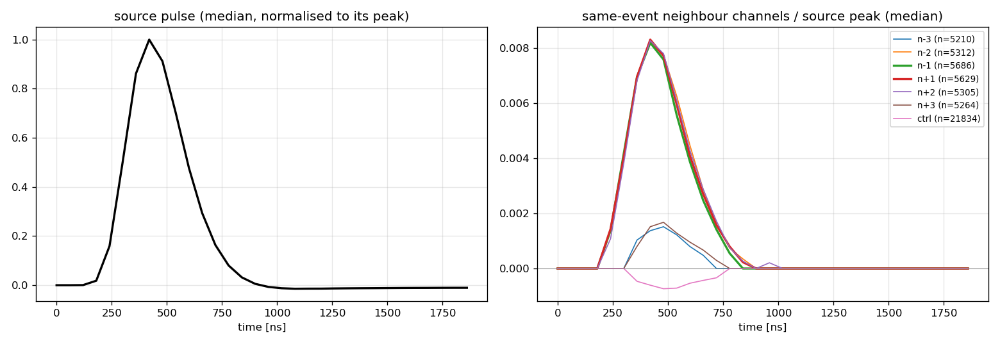
0.85% is tiny: a typical 1000 ADC muon gives an 8 ADC echo, well below the 40 ADC threshold. It only becomes a "hit" for very large pulses (above ≈2500 ADC the neighbour fires 63% of the time). That part is harmless once the reconstruction handles it (next section).
…and channels that are short-circuited
A handful of channel groups were different: their waveforms were identical (amplitude ratio 1.00 ± 0.04, firing together >90% of the time). That is not leakage but a short circuit: two or more pins connected together. We found 8 groups, 21 channels:
FEU6 48–51FEU6 209/211FEU6 236/238FEU6 241/243 FEU7 271–273FEU7 338–340FEU7 351/352FEU7 353–355
Where do these sit? On the detector their pads are far apart (46–354 mm), so they cannot be touching there. But on the connector footprint of the detector board the picture changes completely:
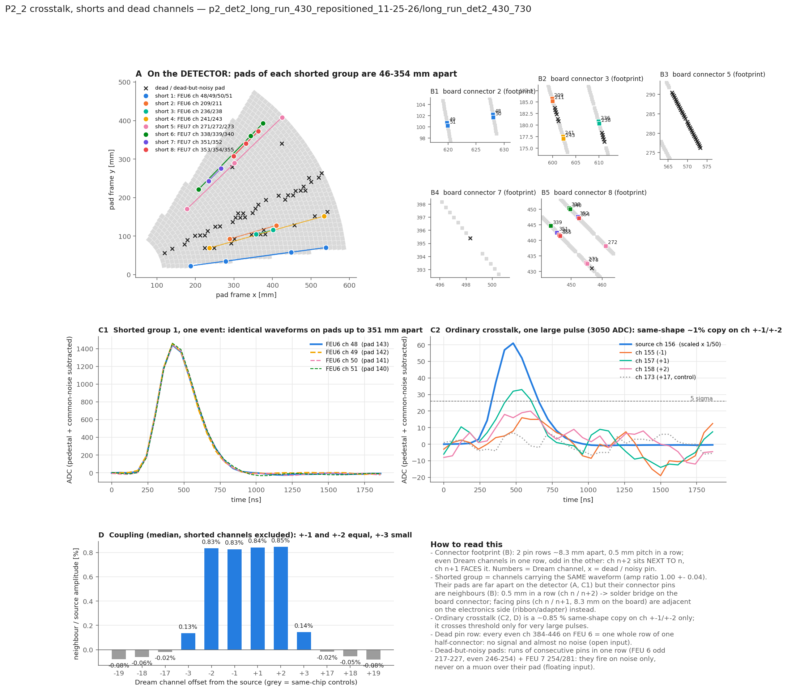
6 · A better reconstruction
Clustering instead of averaging
The original reconstruction took the charge-weighted average of all fired pads. That works for a clean muon (1–3 neighbouring pads), but a single far-away extra hit drags the average into the middle of nowhere:
Pads closer than 20 mm are linked into a cluster (that includes diagonal neighbours). Each cluster gets its own position. Isolated crosstalk hits form their own small clusters instead of polluting the real one. This alone gained about 2 points.
7 · Pointing resolution
Fuzzy tracks next to dead pads
The telescope does not tell us exactly where the muon crossed det2. Its prediction is uncertain by about 3 mm in each direction (we measured this from the spread of the residuals: 4.5 mm total, of which 3.4 mm is just the pad size). So a muon "predicted" 2 mm inside a good pad may actually have crossed the dead pad next to it, and of course left no signal.
Corrected 27 Nov (section 12): the 3 mm was an artefact of a slightly shrunk alignment. With the alignment fixed the pointing is 0.7 mm, the dead-pad excess is gone by 2 mm and the guard is now 2 mm. The 6 mm band below was, in effect, compensating for the misalignment.
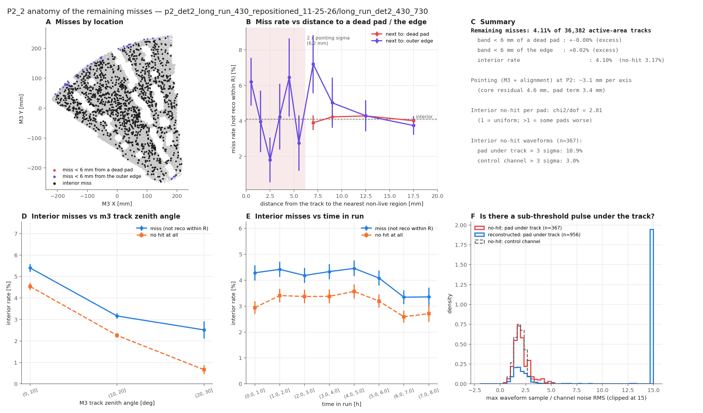
Removing the band costs 17% of the statistics, but it is the honest way to say "the detector where it is connected". The efficiency went from 92.4% to 94.4%.
8 · A property of the design
Pillars cast shadows
The Micromegas mesh is held 128 µm above the pads by small insulating pillars: 12,477 of them, 0.8 mm wide, on a 4 mm grid (the Saclay V1 mask, read from its Gerber file), plus 5 big ones 6 mm wide. Electrons that drift onto a pillar are lost.
At first, comparing misses with the distance to the nearest pillar showed nothing. The reason: with 3 mm pointing uncertainty you cannot tell whether a muon hit a 0.8 mm pillar. The trick was to look at the angle of the track instead.
Under re-examination (27 Nov, section 12): with the corrected 0.7 mm pointing the pillar positions can be tested directly, and the fall of the no-hit rate with angle is just as strong for tracks at least 1.4 mm from any pillar. Pillars therefore cannot be its main cause; the numbers below are kept as they were first derived.
A track crossing the 4 mm gap at angle θ spreads its electrons over a streak of length 4 mm × tan θ. For a near-vertical muon the streak is shorter than a pillar, and if it lands on one everything is lost. That gives a clean prediction: the no-hit rate should be highest for vertical tracks and vanish above ≈13°. The data agree:
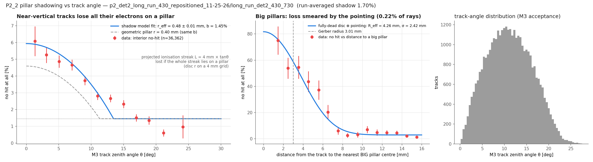
9 · The mis-reconstructions
When the wrong cluster wins: a second particle
With clustering, an event can have several clusters. We used to keep the one with the most charge. In 1.3% of muons, there was a cluster right at the muon (A) but a bigger one far away (B) won. Was B crosstalk? A pointing error? We checked:
- B is not crosstalk: only 1.5% of B clusters are electronic neighbours of A (while 91% of the tiny extra clusters in normal events are).
- B is not a pointing error: it sits typically 14 cm from the track, far more than the 3 mm uncertainty.
- B is a real particle: same pulse height and same arrival time as muons. When the telescope's muon misses det2 completely, det2 still sees such a particle in 2.7% of events (shower companions, or particles outside the telescope's view). 2.7% × "B bigger than A half the time" ≈ 1.4%, exactly what we see.
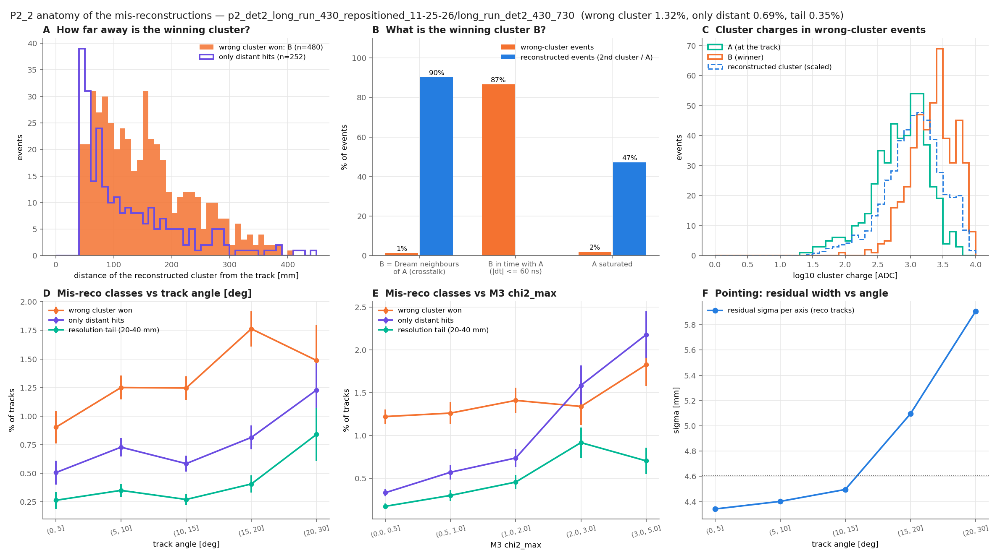
10 · Telescope or detector?
Who is to blame for the last few misses?
The telescope fit returns a quality number, the χ² (small = the planes agree on a clean straight line). Plotting det2's efficiency against it tells us whether the reference is limiting:
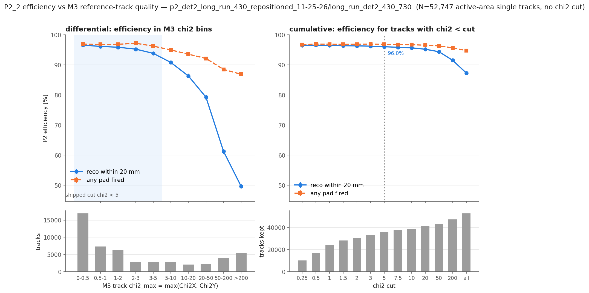
The remaining 0.65% "only distant hits" (something fired, but nowhere near the track) can come from two stories: the telescope mis-pointed (det2's fault: none), or det2 missed the muon while a random particle hit it elsewhere (det2's fault). Three independent methods split them:
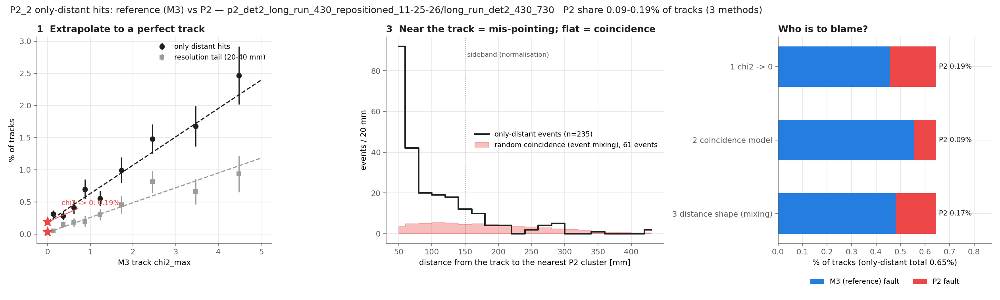
11 · Putting it together
The final picture
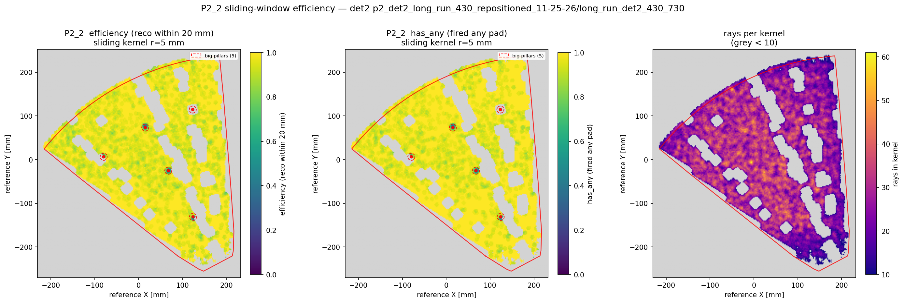
Where does every crossing muon go? The breakdown below attributes each loss to a cause. With the "any cluster within 20 mm" definition the "wrong cluster won" bar is, by construction, zero.
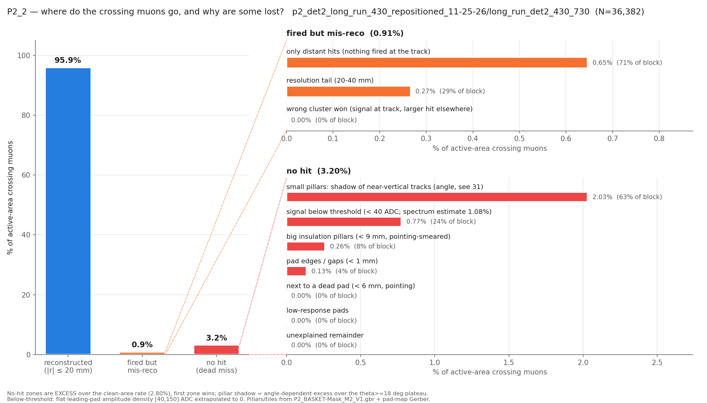
| Final accounting (repositioned long run, 36,382 tracks) | % of muons | whose fault? |
|---|---|---|
| Reconstructed within 20 mm | 95.9 | |
| Only distant hits (telescope mis-pointed) | 0.65 | mostly telescope (det2 ≈0.1–0.2) |
| Resolution tail (20–40 mm) | 0.27 | mostly telescope |
| Small pillars, near-vertical tracks (re-examined in §12: angle-dependent no-hit, cause open) | 2.0 | detector design? |
| Signal below threshold | ≈0.8 | detector (gain fluctuations) |
| Big pillars | 0.26 | detector design |
| Pad edges | 0.14 | detector |
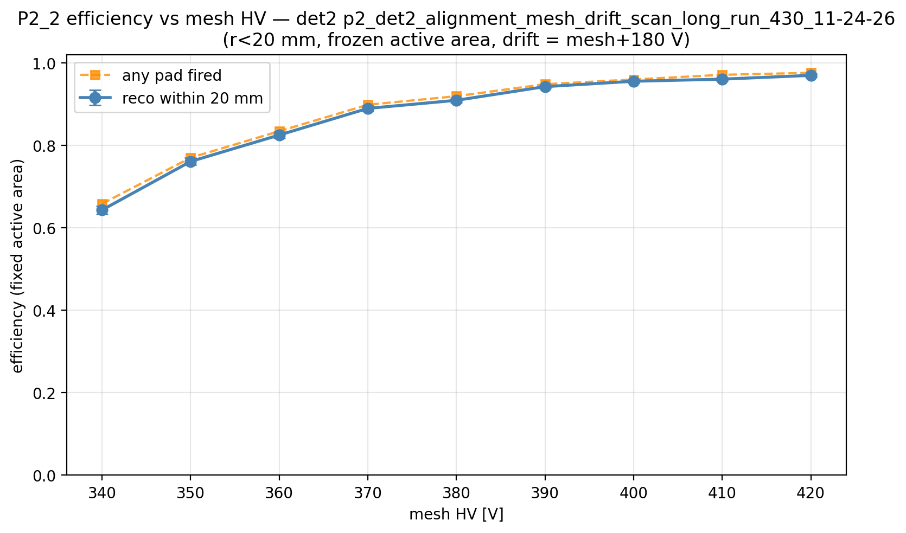
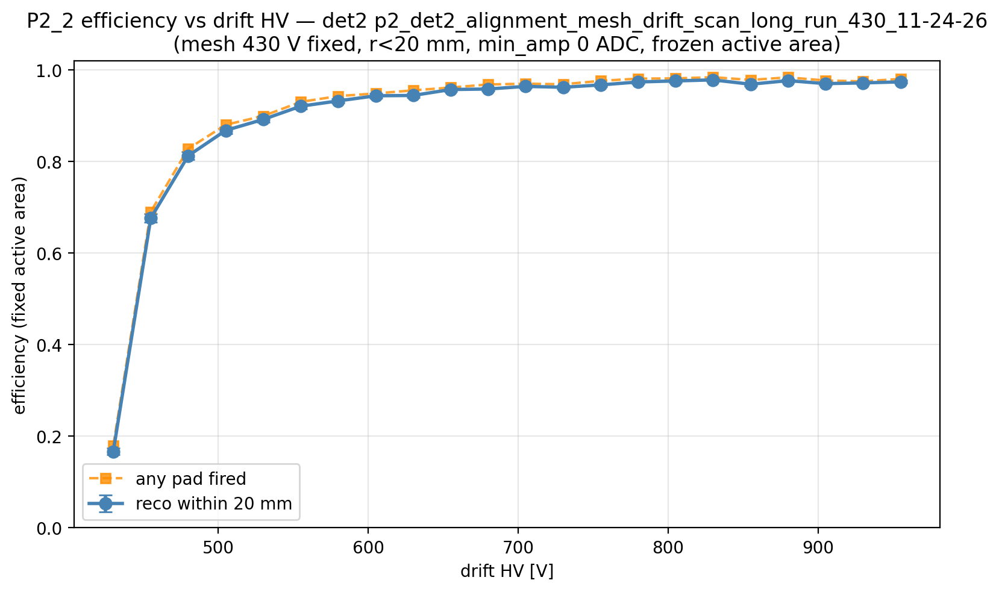
Other numbers from the same run: 14 sparks (1.1 per hour, 0.5% dead time); time resolution ≈19 ns for multi-pad clusters.
12 · Update, 27 November
The alignment was slightly shrunk
Every number above rests on the alignment: the rotation, shift and scale that carry a pad's position on det2 into the telescope's coordinates. It is found by matching, event by event, the telescope track with the det2 cluster and asking which transformation makes the pairs agree best (a least-squares fit). Two questions from the bench sent us back to it: could det2 be tilted? and could the misses at pad borders just be misalignment?
No tilt, but a shrink
First the tilt. We fitted a plane tilted in any direction, plus a possible bow, by using the fact that a height error shifts inclined tracks sideways (by height × slope). Result: a tilt of 0.06° ± 0.05°, i.e. less than 0.1 mm at the edges. det2 is flat and level; a 3D rotation plays no role.
But the same fit found something else: the map from pads to telescope was 2.2% too small (scale 0.978 instead of 1.000) and the det2 plane was placed 6 mm too low (240 mm instead of 246 mm). Why would a fit get the scale wrong? Because about 5% of the pairs are not the muon (the second particle of section 9, or noise, typically 10 cm away). The least-squares scale is, roughly, ⟨pad · track⟩ / ⟨pad²⟩: an unrelated pair adds nothing on average to the top but its full weight to the bottom, so it pulls the scale down. At 20 cm from the centre, 2.2% is 4.4 mm: more than the telescope's real pointing error.
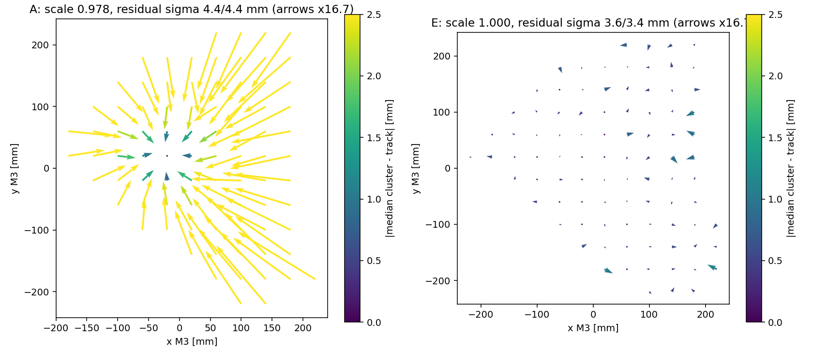
The telescope is four times sharper than we thought
Section 7 estimated the pointing as "4.5 mm of residual, of which 3.4 mm is the pad size, leaves ≈3 mm". Most of those 4.5 mm were the shrink. Measured properly: when a muon fires a single pad, the distribution of the track position across that pad is the flat pad width blurred by the pointing error. Fitting exactly that shape:
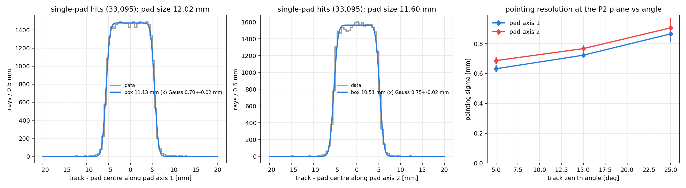
What it changes at the edges, step by step
With a sharp and correctly scaled pointing, a track near a dead pad or near the outer edge can be trusted to within about 1 mm. The left panel below repeats the dead-pad curve of section 7: with the corrected alignment the excess is gone by 2 mm (it was 6 mm). The middle panel looks at the outer edge of the pad array: with the old alignment, tracks 2–4 mm outside the detector were still "seen" 70–98% of the time, impossible unless the map is off; corrected, the edge is a clean step: everything outside is missed, and from about 1 mm inside the miss rate is back to normal.
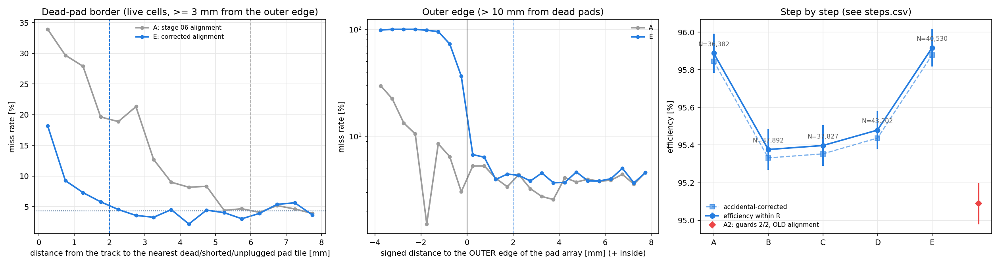
| Step (same data, one change at a time) | tracks counted | efficiency % |
|---|---|---|
| A · as in sections 7–11 (old fit, z 240 mm, 6 mm dead-pad guard) | 36,382 | 95.89 |
| B · + trimmed alignment fit (scale 0.978 → 1.000) | 37,892 | 95.38 |
| C · + det2 plane at 246 mm | 37,827 | 95.40 |
| D · + dead-pad guard 6 → 2 mm | 43,202 | 95.48 |
| E · + 2 mm guard at the outer edge too (new default for det2) | 40,530 | 95.92 |
| control · 2 mm guards but the OLD alignment | 39,103 | 95.09 |
How to read it. B: once the map has its true size it reaches further out, and the "active area" (any point within 8.4 mm of a pad centre) now includes tracks that really passed up to 2.4 mm beyond the last pads; they are missed, so the efficiency drops. The old shrunk map had been hiding them. D: the narrower dead-pad guard returns 5,400 tracks at no cost. E: applying the same 2 mm rule at the outer edge removes the tracks that were never over the detector. The control row shows that the narrow guards are only valid with the corrected alignment.
The full analysis, re-run
The whole chain (maps, validation, loss accounting, telescope-vs-detector blame) was re-run on this run with the corrected alignment. Nothing else changed:
| det2, repositioned long run | before (sections 7–11) | after (27 Nov) |
|---|---|---|
| tracks in the active area | 36,382 | 40,530 |
| reconstructed within 20 mm | 95.89% | 95.92% |
| any pad fired | 96.80% | 96.80% |
| alignment scale / fit RMS | 0.978 / 39.9 mm | 1.000 / 4.7 mm |
| core residual σ (pad size included) | 4.5 / 4.5 mm | 3.6 / 3.4 mm |
| only distant hits | 0.65% | 0.60% |
| of which det2's fault (3 methods) | 0.09–0.19% | 0.09–0.18% |
| misses at pad edges / gaps | 0.14% | 0 |
| big pillars | 0.26% | 0.24% |
| validation tests flagging a bias | 0 / 7 | 0 / 7 |
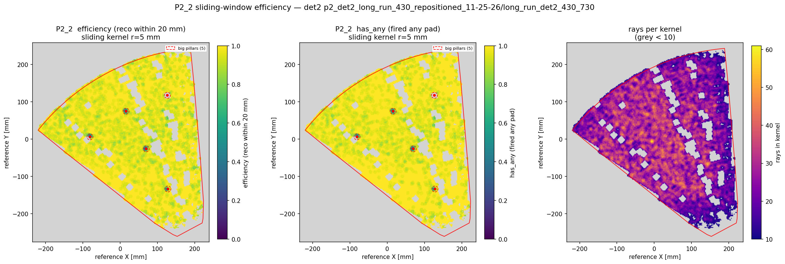
What it changes in the pillar story
Section 8 explained the higher no-hit rate of near-vertical tracks as pillar shadows, because the 3 mm pointing could not resolve a 0.8 mm pillar. At 0.7 mm it can. The test is simple: if pillars cause the angle trend, the trend must vanish for tracks that pass away from every pillar.
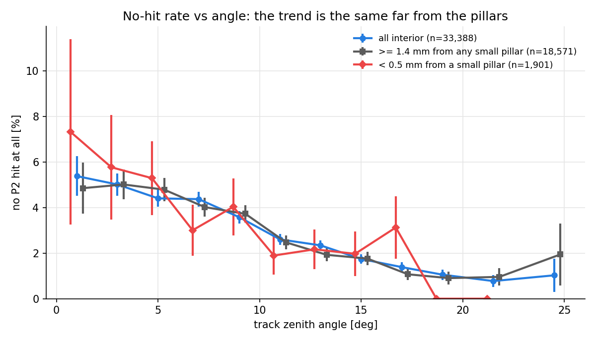
It does not vanish. Tracks right on top of a pillar are only slightly worse, while the trend from ≈5% (vertical) to ≈1% (above 16°) is the same away from pillars, uniform across each pad, independent of the telescope fit quality and of time. Something else makes near-vertical muons leave no signal more often (their pulse-height spectrum also has more small pulses). Its cause is still open; the 2.0% "small pillars" entry of section 11 should be read as "angle-dependent no-hit, cause under study".
Analysis: stages 34–38 and the per-run switches fit_trim_mm,
edge_guard_mm on branch det2-cluster-align-pillar of P2_basket_analysis; enabled
for this run only while it is being validated, the other detectors still use the old alignment.
13 · Action items
What to check on the bench
- Inspect and re-solder the detector-board connectors 3, 2 and 8: 8 groups of shorted pins (solder bridges), with open/noisy pins right next to them on connector 3.
- Connector 5: a full row of pins (FEU 6 even channels 384–446) is not connected.
- Connector 9, top half: the cable/adapter is mounted reversed. Harmless now that the map knows it, but worth labelling (det5 had the same issue on connector 8).
- Weak pads FEU 6 452/456, FEU 7 261 (and candidate FEU 7 29): ≈27% response, a genuine low-gain area.
- The mesh trip of 01:07 (10 µA at 430 V) left a resistive leak; the mesh no longer holds voltage. This must be understood before the next run.
Glossary
- Pad: a ≈12 mm square electrode under the mesh, read by one electronics channel.
- FEU / Dream channel: the electronics; one FEU reads 512 channels in blocks of 64.
- Cluster: a group of neighbouring pads that fired in the same event.
- Crosstalk: a small copy of a signal leaking into a neighbouring channel.
- Short: two channels electrically connected; they record identical signals.
- Pillar: an insulating spacer holding the mesh; electrons landing on it are lost.
- Pointing resolution: how precisely the telescope predicts the crossing point (≈0.7 mm here; 3 mm before the 27 Nov alignment fix).
- χ²: the quality of the telescope's straight-line fit; small is good.
Analysis stages behind each section: 02/06/10/12 (efficiency and maps), 26 and 29 (crosstalk and shorts),
27 (loss breakdown), 28 (χ²), 30 (miss anatomy), 31 (pillar shadow), 32 (mis-reconstructions), 33 (telescope vs
detector), all on branch det2-p1-scans-11-24-26 of P2_basket_analysis.